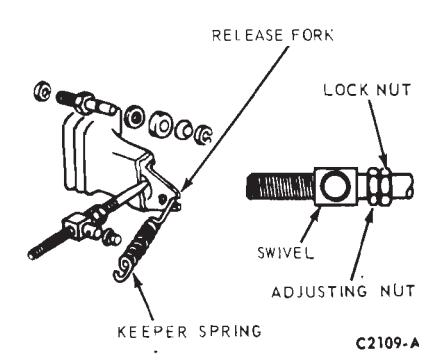
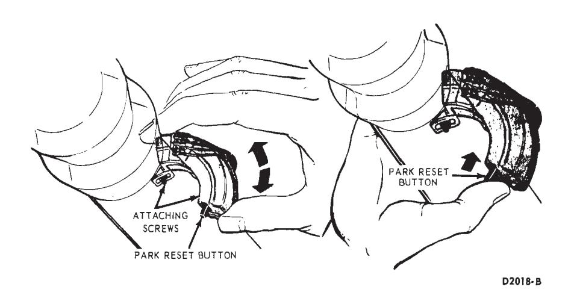
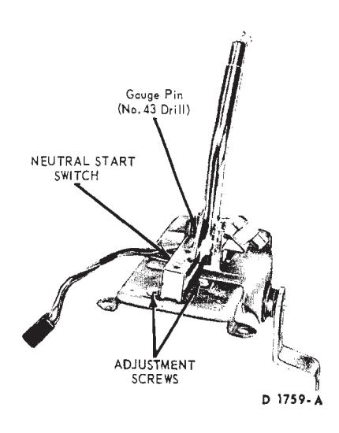
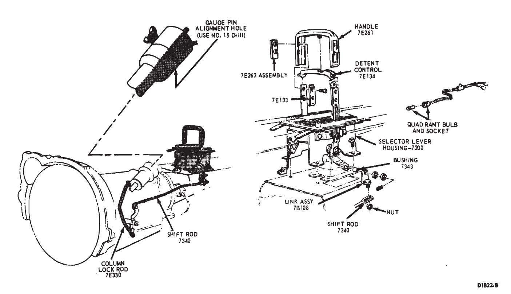
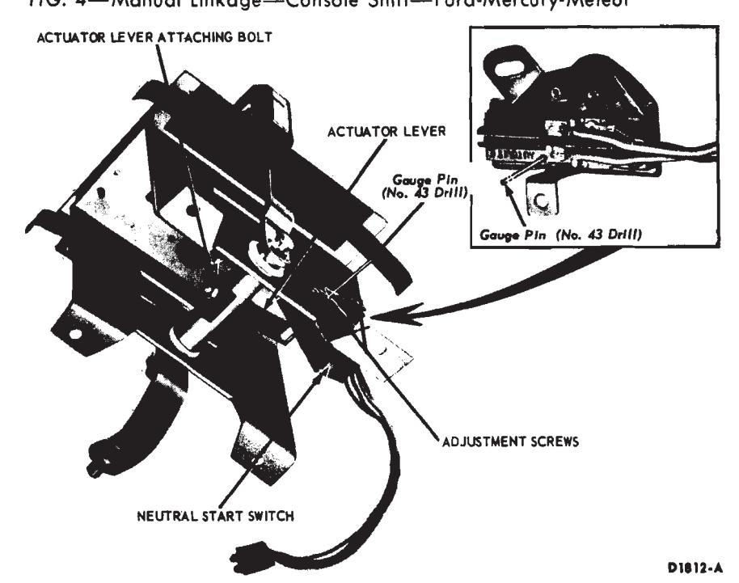
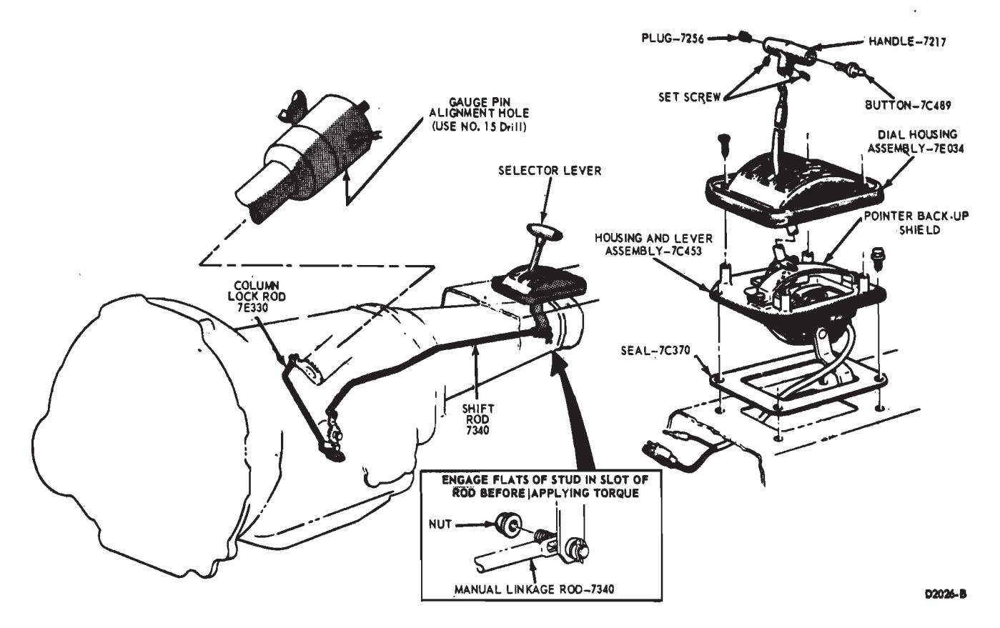

Part 54-03
Sub-parts
- Automatic and Semi-Automatic Transmission Initial Engagement Checks — 54-03-04
- Automatic Transmission Shift Point Checks — 54-03-04a
Component Index
| COMPONENT INDEX Applies To All Models Except As Indicated | Page | COMPONENT INDEX Applies To All Models Except As Indicated |
|---|---|---|
| UNIQUE PRE-DELIVERY CHECKS Clutch Pedal Free Play | Transmission - Automatic and Semi-Automatic - Shift Lever Operation | |
| - All with Std. Trans, except Maverick | 03-01 | Transmission - Manual - Shift Lever Operation |
| - Maverick with Std. Trans. | 03-01 | MAINTENANCE OPERATIONS |
| Neutral Switch - Starting - Check and | 03-01 | Clutch Pedal Free Play Adjustment |
| Adjustment - Falcon, all floor or | All with Std. Trans. except Maverick | |
| console shift models with auto. trans., | - Maverick with Std. Trans. | |
| and Maverick without steering column lock | 03-01 | Transmission - Automatic and Semi-Automatic - |
| Transmission - Automatic - Shift Point Check | 03-04 | Band Adjustment |
| Transmission - Automatic and Semi-Automatic - | FMX | |
| Initial Engagement Check | 03-04 | C6 |
| C4 or C4S |
Unique Pre-Delivery Operations
Transmission Shift Lever — Manual
Floor-Mounted - Check and adjust, if necessary, for smooth cross-over action
Conventional Check and adjust, if necessary, for smooth crossover action and lever position 10 degrees above horizontal.
Check Clutch Pedal Free Play (Except Maverick)
With the engine running and transmission in Neutral, check clutch pedal free play. Lightly depress clutch pedal until opposing pressure is felt. This free play distance should be from 7/8 to 1 1/8 inch (Maverick — 1 inch).
Clutch Pedal Free Play Adjustment — Maverick
- Disconnect keeper spring and move release fork rearward by hand until it stops.
- Loosen locknut and turn adjusting nut to obtain desired free play. Move adjusting nut away from swivel to increase free play. Move it toward swivel to decrease free play.
- After free play is obtained, hold the adjusting nut and tighten locknut against the adjusting nut without disturbing adjustment. Connect keeper spring (Fig. 1).
Neutral Start Switch (Automatic Transmissions)
Check ability to start engine with shift lever in both Neutral and Park position only. Adjust Neutral switch if necessary.
SWITCH ADJUSTMENT COLUMN SHIFT (MAVERICK WITHOUT STEERING COLUMN LOCK AND ALL FALCON)
Neutral Position
-
With the selector lever held lightly against the neutral stop, attempt to start the engine. If the engine starts while holding the lever but does not start when the lever is released, the shift linkage should be adjusted. If the engine does not start in either condition, adjust the switch.
-
To adjust the switch in neutral, place the transmission selector lever against the stop of the neutral detent position.
-
Loosen the two retaining screws that locate the switch on the steering column (Fig. 2).
-
With the selector lever against the neutral stop, rotate the switch until a start in the neutral position is obtained. Then, tighten the switch at- taching screws to 20 in-lbs torque.
-
With the switch properly adjusted in neutral, place the selector lever in the 1 position and push the park reset button (Fig. 2) to the left (counterclockwise) until it stops. The park reset must be performed whenever the switch has been adjusted.
Page
03-03
03-01
03-01
03-05 03-06 03-06
Park Position
-
Place the selector lever in the park position, release the lever and attempt to start. If the engine does not start, reset the park adjustment.
-
To adjust the switch for the park position, place the transmission selector lever in 1 and push the park reset button (Fig. 2) to the left (counterclockwise) until it stops.

Fig. 1 — Clutch Free Play Adjustment — Maverick\
Fig. 2 — Adjusting Neutral Switch — Column Shift\
Fig. 3 — Neutral Start Switch — Console Shift — Fairlane-Montego\ -
Check the operation of the switch in each selector lever position. The starter should engage in only the neutral and park positions. Be sure to perform the park reset if for any reason the neutral switch is adjusted.
If, after performing the switch adjustments, the starter still will not engage in the neutral or park positions, replace the switch. Never replace the neutral switch until the switch adjustments have been made.
Switch Adjustment — Console Shift
Ford, Mercury and Meteor
- With the manual linkage properly adjusted, check the starter en- - gagement circuit in all positions. The circuit must be open in all drive positions and closed only in park and neutral.
- Remove the four screws and plates securing the selector lever handle to the lever. Remove the handle and detent control (Fig. 4).
- Remove two screws from the rear of the console top panel. Pull the panel back to unhook it from the front of the console and remove the panel.
- Loosen the two combination starter neutral and back-up light switch attaching screws (Fig. 5).
- Move the selector lever back and forth until the gauge pin (No. 43 drill) can be fully inserted into the gauge pin holes (Fig. 5).
- Place the transmission selector lever firmly against the stop of the neutral detent position.
- Slide the combination starter neutral and back-up light switch forward or rearward as required, until the switch lever contacts the selector lever actuator. If an adjustment can not be made by rotating the switch, loosen the actuator lever attaching bolt and adjust the lever (Fig. 5).
- Tighten the neutral start switch attaching screws. If the actuator lever was adjusted, tighten the actuator lever bolt to 6-10 ft-lbs.
- Turn the ignition key to the ACC position and place the selector lever in the reverse position and check the operation of the back-up lights. Turn the key off.
- Place the console top panel on the console and install the retaining screws.
- Position the selector lever detent control and handle on the selec- tor lever and secure with the four plates and attaching screws.
Fairlane-Montego
- With the manual linkage properly adjusted, check the starter engagement circuit in all positions. The circuit must be open in all drive positions and closed only in park and neutral.
- Remove the selector lever handle from the lever.
- Remove the trim panel from the top of the console.
- Remove the cover and dial indicator as an assembly.
- Remove the four screws that secure the selector lever retainer to the selector lever housing. Lift the retainer from the housing.
- Loosen the two combination starter neutral and back-up light switch attaching screws (Fig. 3).
- Move the selector lever back and forth until the gauge pin (No. 43 drill) can be fully inserted into the gauge pin holes (Fig. 3).
- Place the transmission selector lever firmly against the stop of the neutral detent position.
- Slide the combination starter neutral and back-up light switch forward or rearward as required, until the switch actuating lever contacts the selector lever.
- Tighten the switch attaching screws and remove the gauge pin. Check for starting in the park position.
- Turn the ignition key to the ACC position and place the selector lever in the reverse position and check the operation of the back-up lights. Turn the key off.
- Position the selector lever retainer to the selector lever housing. Install the six attaching screws.
- Install the cover and dial indicator.
- Install the trim panel on the top of the console. Install the selector lever handle.
Mustang-Cougar
-
With the manual linkage properly adjusted and the engine turned off, place the selector lever in the N (Neutral) position. Then, shift the selector lever from neutral to 1, to P (park) and back to neutral. Shifting the selector lever through this shift pattern should adjust the switch automatically. If not, adjust it manually as follows: 2. With the selector lever in neu- tral, remove the selector lever handle attaching screw and remove the handle (Fig. 6).

Fig. 4 — Manual Linkage — Console Shift — Ford-Mercury-Meteor\
Fig. 5 — Neutral Start Switch Adjustments — Console Shift — Ford-Meteor\ -
Remove the dial housing attaching screws and remove the housing. 4. Remove the two pointer back-up
- shield attaching screws and remove the shield.
-
Remove the two screws securing the neutral start switch to the selector lever housing. 6. Lift the switch from the housing and move the actuator lever all the way to the left. Then, return the actuator lever to the neutral position as shown in Figure 7.
-
Position the neutral switch assembly to the selector lever housing, and secure with the two attaching screws.
-
Place the selector lever in the P (Park) position and check the operation of the switch. The engine should start with the selector lever in the park position. If the engine does not start, replace the switch. Refer to the Neutral Start Switch Replacement procedures in this section.
-
Install the pointer back-up shield on the housing and lever assembly.
-
Install the dial housing on the selector lever housing assembly.
-
Install the selector lever handle.
Transmission Shift Lever — Automatic and Semi-Automatic
Check and adjust, if necessary, to match transmission range and lever position. Adjust with lever in D position with automatic transmissions or in Hi position with semi-automatic transmissions.

Fig. 6 — Manual Linkage — Console Shift — Mustang-Cougar\